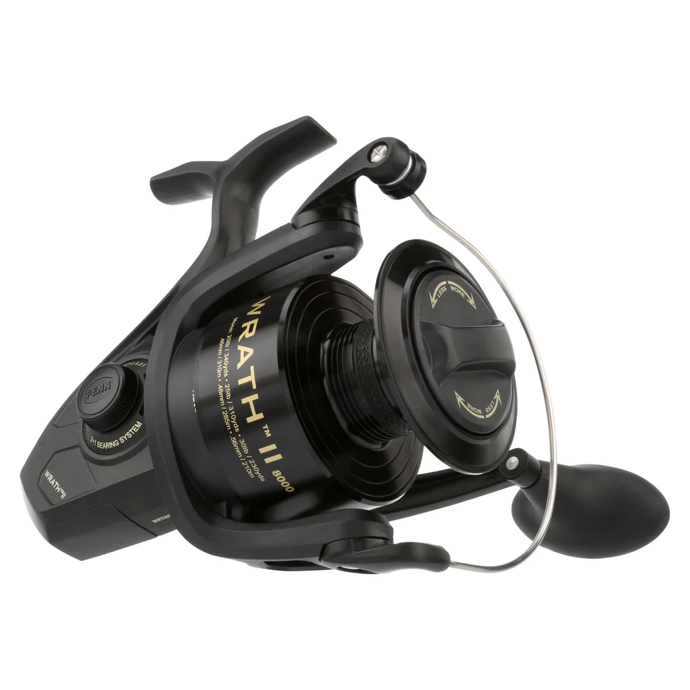

ReelCalc Reel Setup Guide
PENN Wrath II 8000 Line Capacity & Reel Setup Guide
The PENN Wrath II 8000 (WRTHII8000C) is an 8000-size spinning reel. It weighs 30.5 oz, brings in 44 inches of line with each handle turn, and has a listed maximum drag of 25 lb. Allow enough main line for the depth you're fishing and the runs you expect from the fish you're targeting. The calculator below is set up for this exact reel: estimate a full spool of your chosen main line, or add backing underneath a shorter amount.